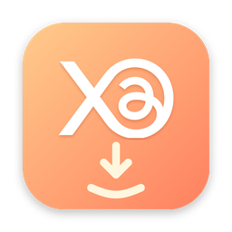

橘子存片 JuziClip 🌼
貼個連結，把 X 和 Threads 的影片存下來。贴个链接，把 X 和 Threads 的视频存下来。
一條貼文裡有好幾個影片、影片其實在被引用的貼文裡，它都能分清楚。一条帖子里有好几个视频、视频其实在被引用的帖子里，它都能分清楚。

Mac：Apple 芯片（M1–M4）· 約 12 MB | Windows：10 / 11，64 位 · 約 12 MB
都不用安裝別的東西 · Mac：Apple 芯片（M1–M4）· 约 12 MB | Windows：10 / 11，64 位 · 约 12 MB
都不用安装别的东西 · GitHub 倉庫GitHub 仓库